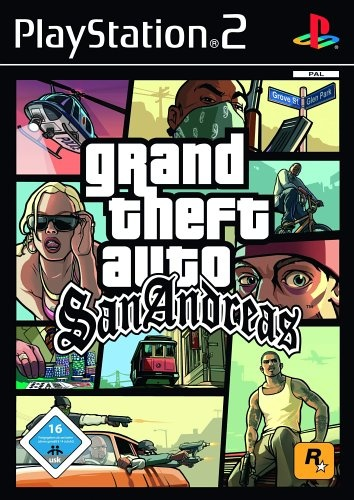
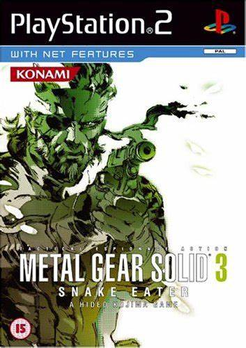
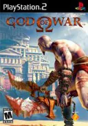
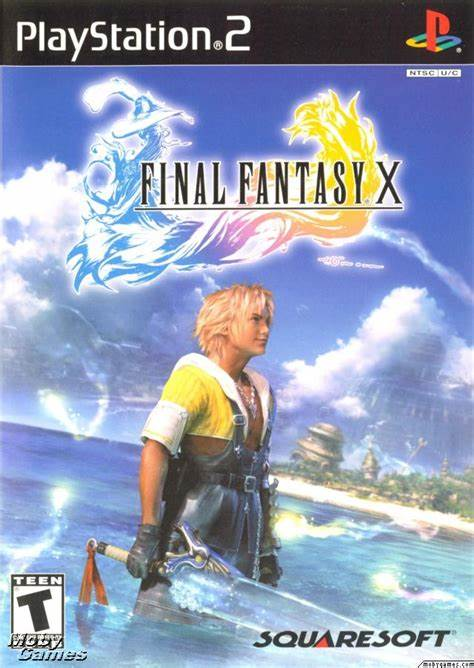
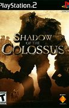

O PlayStation 2, conhecido como PS2, é um dos consoles mais emblemáticos da história dos videogames. Lançado pela Sony em 2000, o PS2 rapidamente se tornou um sucesso mundial, sendo o console mais vendido de todos os tempos com mais de 155 milhões de unidades.
O PS2 era alimentado por um processador central "Emotion Engine" de 128 bits e era capaz de executar jogos em DVD e CDs. Com uma GPU "Graphics Synthesizer" e capacidade para até 6 gamepads DualShock 2, o console oferecia uma experiência de jogo imersiva e dinâmica.
Além de ser um poderoso console de jogos, o PS2 também funcionava como um reprodutor de DVD, contribuindo para a sua popularidade. A Sony também introduziu funcionalidades online através do DNAS (Dynamic Network Authentication System), permitindo aos jogadores conectarem-se e jogarem online.
|  |  |  |  |  |
O PS2 não apenas definiu uma era de jogos, mas também deixou um legado duradouro na indústria. Seu sucesso pode ser atribuído à sua vasta biblioteca de jogos, funcionalidades multimídia e a capacidade de atrair uma ampla gama de jogadores. Mesmo após o lançamento do PlayStation 3, o PS2 continuou popular, com a produção encerrando apenas em 2013.
O último jogo lançado para o PS2 foi "Pro Evolution Soccer 2014", marcando o fim de uma era gloriosa para o console. Com mais de 157 milhões de unidades vendidas, o PS2 permanece como o console mais vendido de todos os tempos.
No Brasil, o PS2 foi lançado com o preço de R$ 799,00, acima do valor de cerca de R$ 600,00 cobrado por outros lojistas.